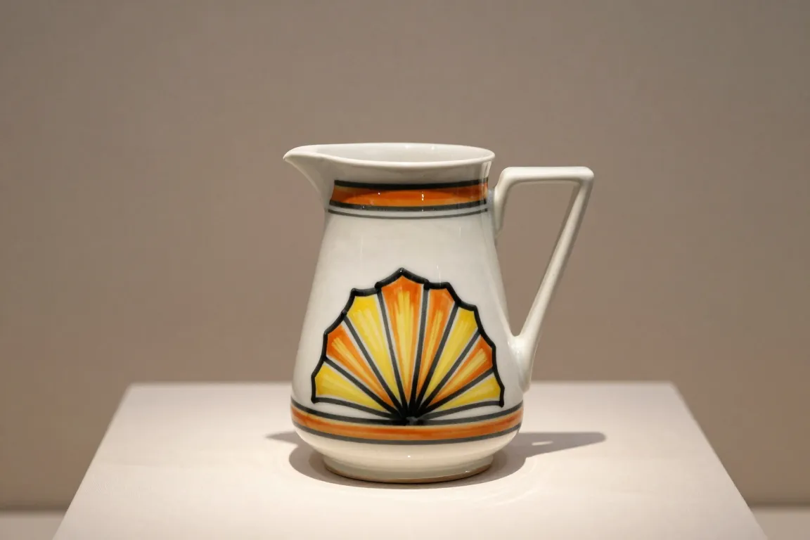

Lyst, håndmalt leirgods i vinkler, kjegler og bånd. Malere ved pottemakeriene i Stoke-on-Trent satte dristig flat farge på en hvit bunn, og formene kopierer de trappede og koniske formene fra Paris-utstillingen i 1925.

Kjerneidé
Et billig hvitt leirgods blir moderne når en maler setter sterk flat farge i skarp geometri på en form med vinkler og kjegler.
Designprinsipper
Form stykket i en skarp geometri: en kjegle, et trinn, et firkantet eller trekantet håndtak.
Mal i flate emaljefarger: oransje, gul, rød, grønn og sort, uten skyggelegging.
Del flaten med bånd på 3 til 10 mm, i dristige striper eller trinn.
Mal et motiv i noen få strøk: en krokus, en solstråle, et tre eller et hus, og gjenta det.
Bruk en hvit eller kremfarget bunn og en tynn klar glasur som gir en lys glans.
La hånden synes: hvert strøk har en liten variasjon, selv om mønsteret er et fast design.
Gi hvert mønster et dristig navn og sett det på bunnen med produsentmerket.